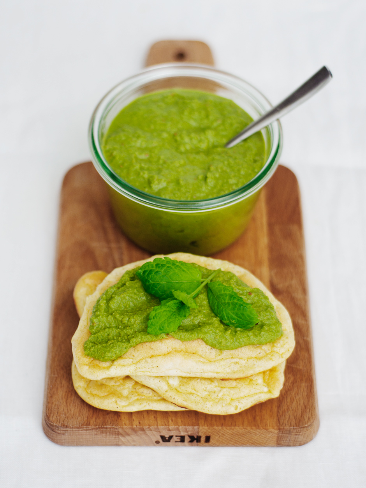

munt-koriandersaus
voor 250 ml

Heerlijke en veelzijdige munt-koriandersaus, deze doe ik echt overal bij.
Deze saus is makkelijk te bewaren in een knijpfles, maar dat hoeft natuurlijk niet.
Er gaat niets boven een gerecht naar een hoger niveau tillen met een jeerlijke zelfgemaakte saus.
Je kunt het recept aanpassen hoe je wilt. Varieer bijvoorbeeld met de verhouding koriander-munt,
voeg meer of minder chilipepers toe, voeg yoghurt toe of laat deze weg...
De saus is altijd goed!
Ingredienten:
- 2 tl komijnzaad
- 1 grote bos koriander, ca 100 g
- 1 grote bos munt, ca 100 g
- 6 groene chilipepers
- 4 teentjes knoflook
- 5 cm gemberwortel
- sap van 2 citroenen
- 2 el of 150g yoghurt (optioneel)
- zout
stappen:
- Rooster het komijnzaad in een droge koekenpan op middelhoog vuur tot het aroma vrij komt en het warm aanvoelt maar nog niet kookt.
- voeg toe aan een blender:
- het geroosterde komijnzaad
- de munt
- de koriander
- de groene chilipepers
- de knoflook
- de gemberwortel
- het citroensap
- 2 eetlepels yoghurt
- maal tot pasta